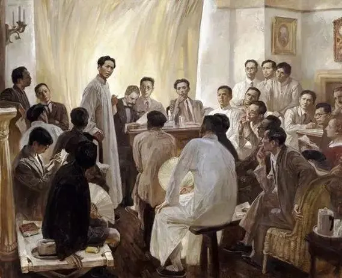
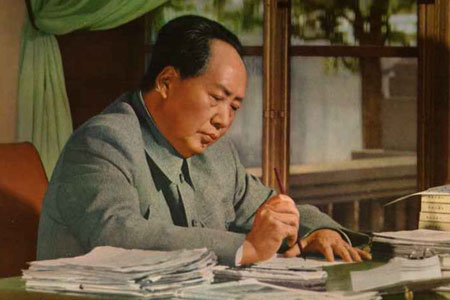

✤毛泽东理论简述 点击即可展开✤
毛泽东思想是马克思列宁主义基本原理和中国革命具体实际相结合的产物，是中国共产党人集体智慧的结晶。是由毛泽东倡导并在二十世纪中国革命中大范围实践的一种政治、军事、发展理论,一般认为其为马列主义在中国的发展.中国共产党认可毛泽东思想是其
取得新民主主义革命、抗日战争、国共内战胜利、建立中华人民共和国的重要理论.


毛泽东形成和发展的社会历史条件分为时代背景、理论依据和实践基础 （1）时代背景：战争与革命
（2）理论依据：十月革命给中国送来了马克思列宁主义，帮助中国的先进分子
开始用无产阶级的世界观作为观察国家命运的工具
（3）实践基础：中国共产党领导人民进行革命和建设的成功实践
毛泽东思想的主要内容和活的灵魂：主要内容：①新民主主义革命理论；
②社会主义革命和社会主义建设理论；
③革命军队建设和军事战略的理论；
④政策和策略的理论；
⑤思想政治工作和文化工作的理论；
⑥党的建设理论
活的灵魂：贯穿于毛泽东思想的各个组成部分的立场、观点和方法，是毛泽东思想的活的灵魂的三个方面，即实事求是，群众路线，独立自主。

分为以下三点 ①是马克思主义中国化的第一个重大理论成果；
②是中国革命和建设的科学指南；
③中国共产党和中国人民宝贵的精神财富.


与毛主席相关的党史美术作品
从左到右依次为《歌唱祖国的春天》《红军过雪山》《万山红遍》《江山如此多娇》《革命理想高于天》《井冈山会师》《唤起工农千百万》.
这些作品都体现了毛主席相关的文学或理论著作,例如国画万山红遍的文学作品原型就为毛主席的《沁园春·长沙》,我们将它们作为文创设计的参考和灵感来源.
1
2
3
4
5
6
7
党史相关故事
《歌唱祖国的春天》《万山红遍》《江山如此多娇》《革命理想高于天》
1.《歌唱祖国的春天》:党的领导下新中国成立初期工农兵大家庭欢聚一堂的情景这幅作品描绘的是在一片桃林中，工农兵大家庭欢聚一堂正在听一位老妈妈放声歌唱的欢乐景象。画家将群体人物组合形成一个社会的象征，把写意和工笔有机地结合在一起，是中国画发展的一个飞跃。1956年是新中国成立最初十年中重要的一年，当时第一个五年计划正在实施，年轻的新中国日新月异，社会气氛朝气蓬勃，整个民族的精神面貌焕然一新，各行各业的人们都在用自己的方式表达出对于美好生活的向往。
画面元素提炼: 桃林、山石、花卉、放声歌唱的老妈妈、围观倾听的工农兵群众、羊与白鸽、远处的山脉和浮云
2.毛泽东《沁园春·长沙》:画家以此创作了国画《万山红遍》1925年秋，32岁的毛泽东来到湖南长沙，重游橘子洲头。面对奔涌不息的湘江和对岸岳麓山上大片的枫叶，他触景生情，写下了脍炙人口的《沁园春·长沙》。它记录了青年毛泽东的风华正茂与浩然壮志。上世纪60年代初，画家李可染取毛泽东“万山红遍，层林尽染”词意，创作了国画《万山红遍》。
画面元素提炼: 红色枫林、房屋、瀑布、江水
3.《江山如此多娇》:祖国的壮丽山河 这幅作品是新中国成立十周年前夕，由画家傅抱石和关山月联袂创作的。它将中华大地上几乎最能表现祖国壮丽山河、最能代表中华民族精神的景物艺术性地融汇在一起。它以毛泽东主席那首脍炙人口的诗词《沁园春·雪》为立意，并完美地诠释出其中巍峨震撼的气魄。
画面元素提炼: 长城雪岭、松树青山、江河大海、高悬的红日
4.沈尧伊《革命理想高于天》处于对长征精神的无限向往和崇拜，1975年，画家沈尧伊毫不犹豫地选择了长征主题进行创作，并身体力行，用三个月的时间重新走了一趟长征路。之后他创作了系列油画，并用真挚感情描绘了长征路上的故事。
画面元素提炼: 篝火、红军战士、火光
我们的文创产品
我们的第一款产品名为“往昔焕新彩——美术经典中的党史主题变色纸模创意摆件”。 我们基于前期的调研，将部分美术经典中的党史作品进行关键元素提炼和再设计，主要选取了：“红军过雪山”、“万山红遍”、“歌唱祖国的春天”这几幅党史有关的美术经典作品，根据其场景元素制作白模。 我们的立意：通过这种逐渐变色的效果映射革命成果也是循序渐进的过程，更是新中国的光明照亮每一块中华土壤的过程、星星之火逐渐燎原的过程。红色精神薪火相传,党的光荣历史永不磨灭,在新时代也会重新焕发出新的色彩。
我们的第二款产品名为“今朝花又开——美术经典中的党史主题种子纸日历”。星星之火，虽微弱，却蕴含着燎原的磅礴力量。通过这张种子纸日历，我们播撒下希望与传承的种子。这张纸，不仅镌刻着党史的经典之作，其文字铿锵有力，交织生长，更如同红色文化的根脉，在这片土地上深深扎根。这些种子纸不仅是时间的忠实记录者，更是历史的鲜活传承者。它们以日历的形式，将每一天的时光与党的光辉历程紧密交织，让历史与现实在纸张上交织辉映，共同书写着时代的华章。
1
2
3
4
5
6
7
8